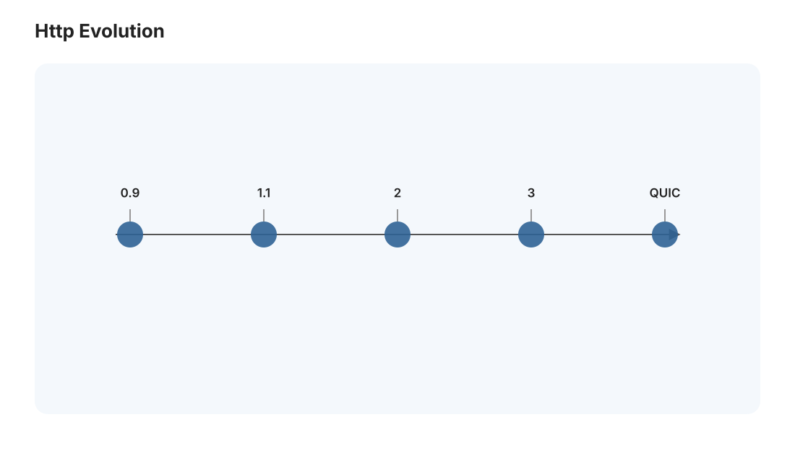
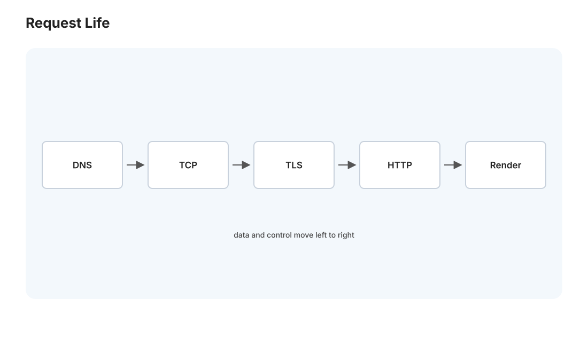
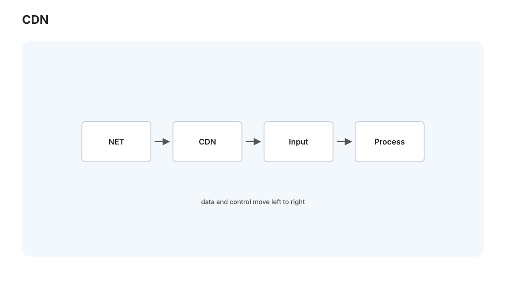

本页目录
网络 II · HTTP、TLS 与现代网络
对标：Stanford CS144 应用层 / High Performance Browser Networking（Grigorik）｜ 前置：net-01、crypto-02（TLS） 从传输层往上，到你每天打交道的应用层。这一页讲 HTTP 的演进（0.9 到 HTTP/3 每一代解决的具体瓶颈）、DNS（域名怎么变成 IP）、TLS 握手（浏览器的锁图标背后），以及让全球网页秒开的现代网络基础设施（CDN、缓存、QUIC）。这也是 web 全栈线（web-01/02/03）的网络地基——Medusa 经 cloudflared 暴露到公网，走的正是这一整套。
1. HTTP：一个不断打补丁的协议

HTTP 是请求—响应的文本协议：客户端发 GET /path（方法 + 路径 + 头部），服务器回状态码（200/404/500）+ 头部 + 正文。无状态（每个请求独立，状态靠 Cookie/Token 在应用层维护——web-02 细说）。它的演进史就是一部对抗延迟的历史：
| 版本 | 关键改进 | 解决的瓶颈 |
|---|---|---|
| HTTP/1.0 | 一请求一连接 | —（每次都 TCP 握手，慢） |
| HTTP/1.1 | keep-alive 连接复用、管线化、分块传输 | 省握手，但队头阻塞（一个慢响应堵住后面） |
| HTTP/2 | 多路复用（一连接多流并发）、头部压缩、服务器推送 | 应用层队头阻塞解决，但TCP 层队头阻塞仍在（丢一个包全部流卡住） |
| HTTP/3 | 跑在 QUIC（UDP） 上 | 彻底消灭队头阻塞、0-RTT 握手 |
读法：每一代都在解决上一代暴露出的新瓶颈——这是理解一切技术演进的范式（"解决方案创造新问题"）。HTTP/2 的多路复用解决了 1.1 的应用层队头阻塞，却因为底下还是 TCP（丢包重传阻塞整条连接）而不彻底，直到 HTTP/3 把可靠性搬到 UDP 上的 QUIC 才根治——net-01 埋的"QUIC 避开 TCP 队头阻塞"伏笔在此收线。
2. DNS：互联网的电话簿
你输入 medusa.hhzi.eu.cc，机器需要 IP 才能连。DNS 是把域名翻译成 IP 的分布式分层数据库：
- 层级：根服务器 → 顶级域（.cc）→ 权威服务器，逐级查询。
- 缓存：各级大量缓存（你的系统、路由器、ISP），否则根服务器会被打爆——DNS 是"分层 + 缓存"扩展性设计的教科书。
- 它也是性能因素：首次访问一个域名要 DNS 查询（几十 ms），故有 DNS 预解析、长 TTL 缓存。
安全一提：传统 DNS 明文、可被劫持/投毒 → DNSSEC（签名）、DoH/DoT（加密 DNS）。"域名解析"这一步也是攻击面（🔗 sec 线）。
3. TLS：锁图标背后（复习 crypto-02，网络视角）
https = HTTP over TLS。从网络分层看，TLS 夹在传输层（TCP）和应用层（HTTP）之间。握手做三件事（🔗 crypto-02 详证）：① 用非对称密码交换出对称会话密钥（前向保密）；② 服务器用证书证明身份（PKI 信任链）；③ 之后用对称密钥（AES-GCM）加密所有 HTTP 数据。
性能代价与优化：TLS 握手要额外往返（RTT），故有会话恢复（复用之前的密钥省握手）、TLS 1.3（握手从 2-RTT 降到 1-RTT，甚至 0-RTT）。HTTP/3 的 QUIC 把 TLS 1.3 直接集成进传输握手，连接建立几乎零延迟——安全与性能在此合流。Medusa 的 cloudflared 隧道就是把本地 :8000 通过 Cloudflare 的边缘（自动 TLS + CDN）暴露到公网，你免了自己配证书。
4. 现代网络：为什么全球网页能秒开


真实的 Web 性能靠一整套基础设施：
- CDN（内容分发网络）：把静态资源缓存到离用户最近的边缘节点——纽约用户从纽约取，不必回源到你的 Win 机。"把内容搬到用户身边"是对抗光速（跨洋 RTT ~150ms）的根本手段。
- HTTP 缓存：
Cache-Control/ETag头部让浏览器和 CDN 缓存响应——最快的请求是不发生的请求。理解缓存头是前端性能（web-03）的必修。 - 压缩：gzip/brotli 压文本、图片用现代格式——省带宽即省时间。
- 连接层优化：keep-alive、HTTP/2 多路复用、QUIC 0-RTT——都是省往返。
方法论：Web 性能优化 = 减少往返次数 × 缩短每次往返距离 × 减少传输字节。这三个杠杆覆盖了几乎所有前端性能手段，是一张能装很多知识的心智地图。
5. WebSocket 与实时通信
HTTP 是客户端发起的请求—响应，服务器无法主动推送。要实时（聊天、行情、Medusa 若做实时推送）需要： - WebSocket：在 HTTP 握手后升级成全双工长连接，双向随时发消息。 - SSE（Server-Sent Events）：服务器单向推流，更简单。 - 轮询/长轮询：退化方案，客户端反复问。
选择取决于方向与频率——这是 web-02 后端设计实时功能时的决策点。
6. 练习与要点
例 1（一次网页加载的全链路） 从在浏览器敲 https://medusa.hhzi.eu.cc 到页面显示，列出所有网络步骤：DNS 解析 → TCP 握手 → TLS 握手 → HTTP 请求 → (CDN 命中?) → 响应 → 渲染。这是最经典的系统面试题"输入 URL 后发生了什么"，也是本站网络线的集大成——你应该能一口气讲完。
例 2（HTTP/2 为什么不够） 解释"HTTP/2 解决了应用层队头阻塞，却没解决传输层队头阻塞"——画出丢一个包时 HTTP/2 over TCP vs HTTP/3 over QUIC 的区别。理解一个优化的边界在哪，比知道它存在更深。
例 3（缓存头设计） 给 Medusa 前端的 JS bundle、API 响应、用户头像分别设计 Cache-Control 策略（长缓存 + 文件名哈希 / 不缓存 / 短缓存）——把缓存理论用到你自己的系统。\(\blacksquare\)
▶ 关联实验 L12（极简 HTTP 服务器）：
labs/L12-http-server/—— 从 socket 开始实现 HTTP/1.1（keep-alive + 分块 + 静态文件），是 web-02 后端的下一层。跑在 Mac 上。
网络两页完成。下一页进入数据库 I——存储与索引：数据怎么在磁盘上高效组织，B+ 树为什么统治了数据库索引。